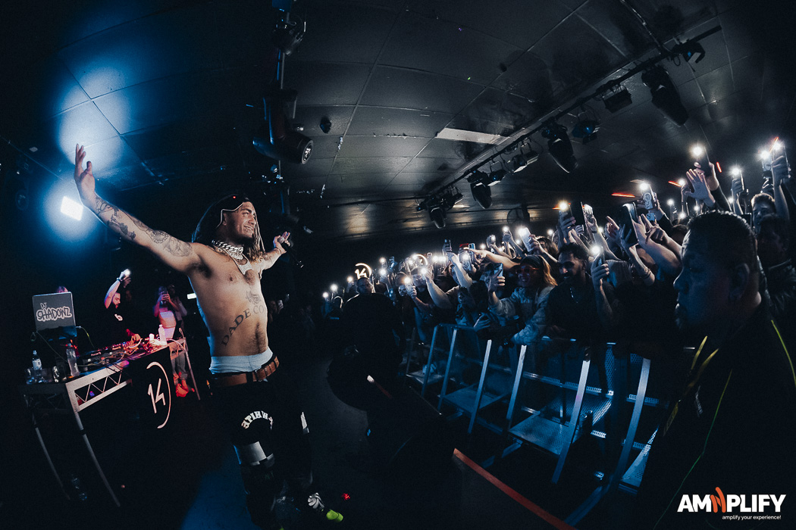

Lil Pump, born Gazzy Garcia in 2000, is an American rapper who rose to fame in 2017 with his hit "Gucci Gang," reaching #3 on the Billboard Hot 100. Known for his catchy beats, repetitive lyrics, and vibrant style, he helped define the "SoundCloud rap" scene. Despite controversies and legal issues, he remains a key figure in modern hip-hop, popular among younger audiences.
For more detailed information about his achievements, you can check out sources like Billboard and Medico Topics.
